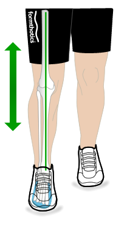

Выберите ваше местоположение

 Москва
Москва
Выберите ваше местоположение
Москва
Москва
Ваш город - Москва?
Выберите ваше местоположение

- Формтотикс - комфорт при ходьбе - синоним здоровой осанки и всего организма в целом

По статистике, до 80% людей сталкиваются в течение жизни с плоскостопием и различными деформациями стопы, но многие обращают внимание на это порой слишком поздно.
Дискомфорт и усталость при ходьбе кажется многим нормой, но скорее всего это первые симптомы того, что стопа не выполняет свои функции правильно.
На нарушения работы стопы также указывают и натоптыши, мозоли, варикозное расширение вен.
При появлении первых таких признаков мы рекомендуем обратиться к врачу ФормТотикс, который поможет скорректировать деформации стоп с помощью наших стелек. Только они позволяют восстановить частично утраченную функцию стопы, стимулируя работу мышц и связок, и предотвратить много других заболеваний.
Первопричина болезней стоп – издержки цивилизации.
Эволюция приспособила тело человека к эффективной работе: наши предки ходили босиком по земле и песку, которые принимают форму стопы и помогают телу балансировать и функционировать без лишнего напряжения. Природные поверхности также стимулируют нервные рецепторы подошвы стопы благодаря полноценному контакту с опорной поверхностью. Современный человек перемещается по плоским и жестким искусственным покрытиям, из-за чего стопа постоянно оказывается в положении гиперпронации. Это приводит к несоосности сегментов во всей скелетно-мышечной системе, вызывая боли, деформации и патологии.
C помощью стелек можно не просто решить многие проблемы со здоровьем стоп или восстановиться после травм и повреждений, но и не допустить их. Профилактика плоскостопия или любого другого заболевания – лучшее лечение!
без
Стельки
ФормТотикс
ношение
Стельки
ФормТотикс
Нога чрезмерно прогнута внутрь, нижняя конечность и колено малалинируются во время походки. Большая сторона стопы оказывает значительное давление, вызывая функциональное заклинивание рычага большого пальца стопы, препятствуя движению вперед, увеличивая риск травмы и уменьшая комфорт.
Пятка и медиальная арка хорошо поддерживаются, распределение давления равномерно распределяется по всей поверхности стопы. Пятка эффективно закреплена. Нога способна функционировать оптимально, максимально комфортно, без риска получения травмы.
– единственная в мире клинически доказанная медицинская система из Новой Зеландии для лечения болезней опорно-двигательного аппарата, снятия боли в суставах и восстановления функций стопы
FSI соответствует международной аккредитации ISO для комплексных систем управления качеством, в частности, при проектировании и производстве медицинских изделий.

Эффективность сиcтемы ФормТотикс подтверждена многочисленными клиническими испытаниями в ведущих клиниках мира
Узнать подробнее 8 800 122-33-44
8 800 122-33-44